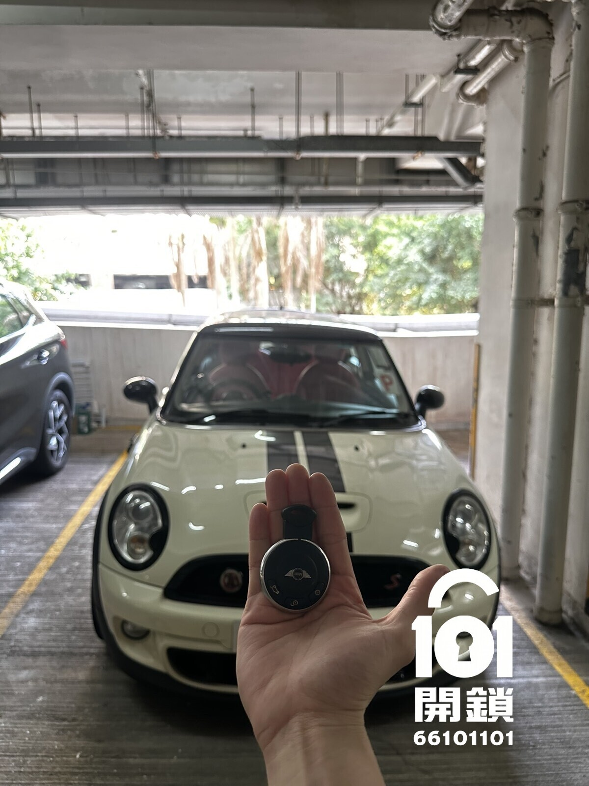
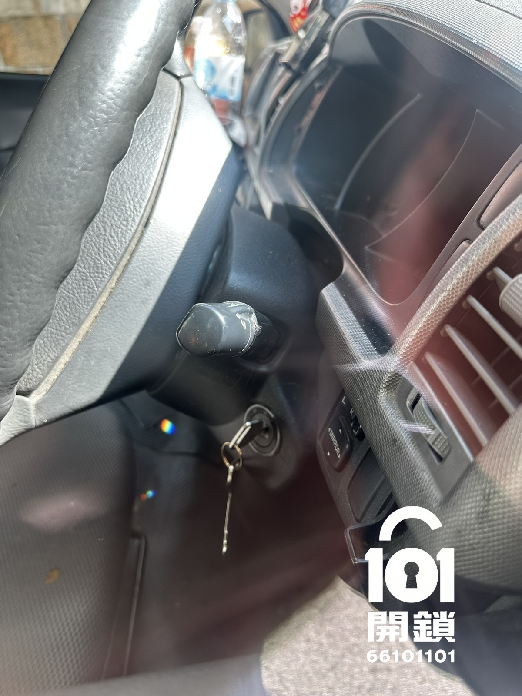
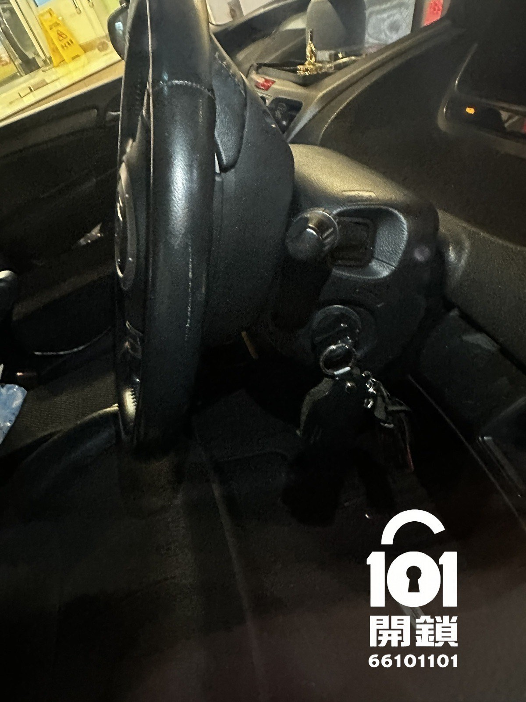
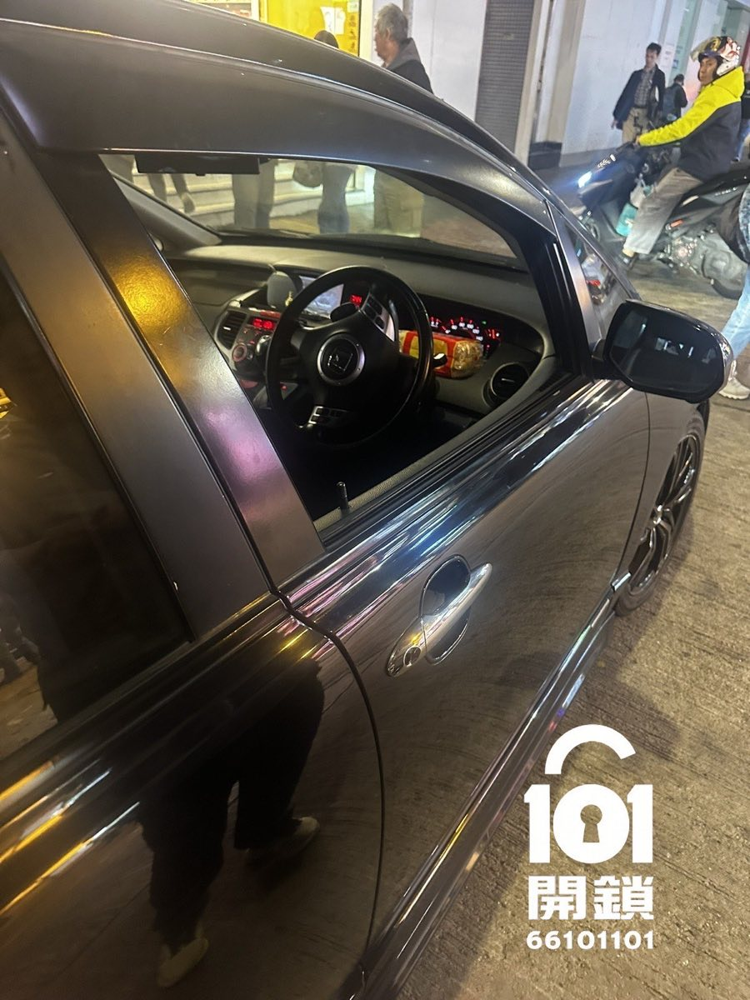

車匙留在車內
車門意外反鎖，但車匙可見或確認留在車廂、尾箱內。
車門意外反鎖，但車匙可見或確認留在車廂、尾箱內。
鎖孔長期未使用、車匙磨損或門鎖機件卡住，需要先判斷故障位置。
可能涉及遙控器電池、車輛電池、同步設定或防盜系統，不一定屬於車門鎖問題。
以下為101開鎖處理汽車車門反鎖及車匙留在車內的服務實拍。不同汽車品牌、年份、門鎖及防盜系統的開鎖方法並不相同，汽車鎖匠會先核實車輛資料及合法使用權，再評估合適方案。




不能保證。新舊車款、防盜設計和車身結構不同，必須先提供準確資料確認。
如果晶片車匙仍在車內並正常，通常可按原有方式使用；如車匙全失或防盜系統故障，則屬另一類服務。
要視乎停車場准入、樓底、管理處規則、工作空間及訊號情況，查詢時應先說明。